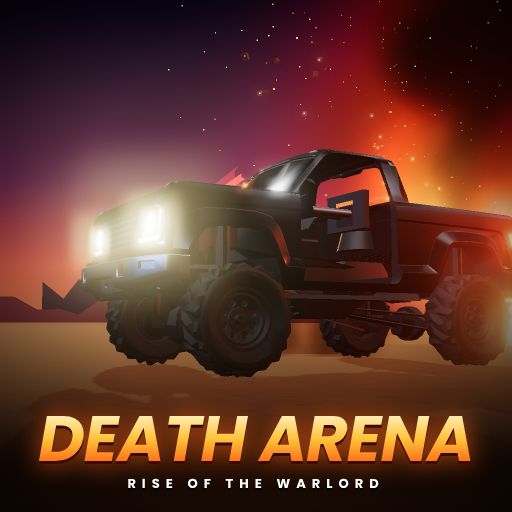
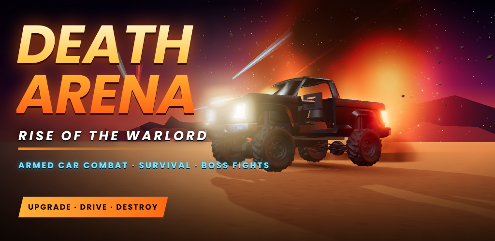

Death Arena
RISE OF THE WARLORD
Armed car combat, survival waves and boss fights in a huge open desert arena.

Features
- Drive and fight with armed vehicles using realistic car physics
- Survival mode with team allies, supply drops and boss waves
- Garage with upgrades and a vehicle roster
- Top-down camera with full touch controls
- Runs on everyday Android phones